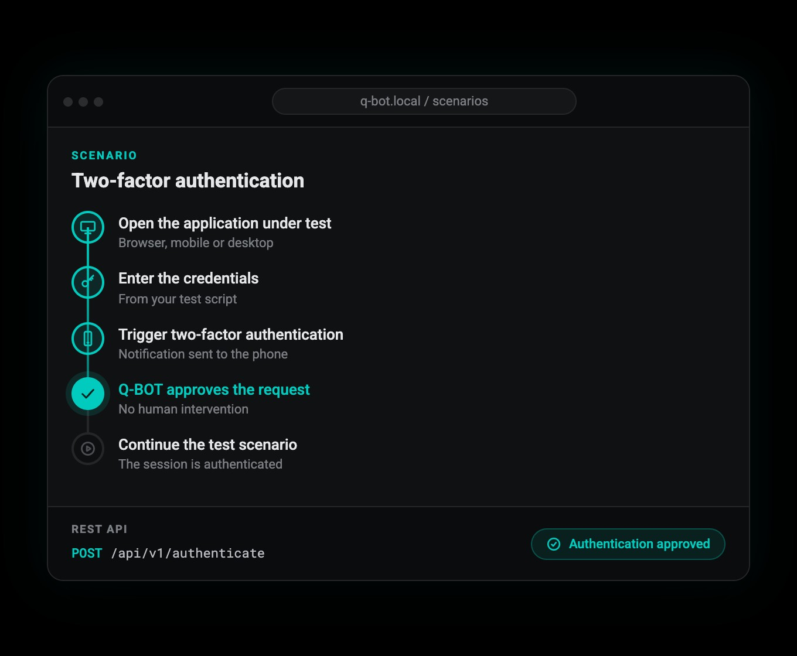

From your test pipeline
A single HTTP request when the test reaches the 2FA step. Explicit, deterministic, easy to integrate into any pipeline.
GET /scenarios/:id/execute- No API key, no agent to install
Q-Bot, the result of an innovation combining electronics, software and design, automates LuxTrust two-factor authentication in Luxembourg as well as other systems internationally. Designed by testers for testers, it embodies the expertise of Q-Leap, testing experts for over 10 years.
Q-Bot is built to order, with a compact size that fits within the space of an A3 sheet (29.7 x 42 cm). Every module, tablets included, is integrated into this optimised format so that it fits the testers' working environment perfectly, without cluttering their desk.
A miniature computer, as compact as a credit card, with the following technical characteristics:
Q-Bot has a standalone web application for building scenarios based on the mobile app's screens, for perfect positioning. No technical skills are required.
The Q-Bot web interface lets any tester create a scenario in minutes. No scripting, no XPath selectors, no brittle element IDs.
The result is a reusable, named scenario: a visual map of what to tap and when, ready to be triggered on demand from any test pipeline.
Q-Bot offers two complementary usage modes to fit any test workflow.

Every scenario in Q-Bot is accessible via a simple REST API. No SDK, no proprietary plugin, no agent to install in your CI environment.
One call from your pipeline, or none at all: the companion app fires the moment a 2FA notification reaches the device.
A single HTTP request when the test reaches the 2FA step. Explicit, deterministic, easy to integrate into any pipeline.
GET /scenarios/:id/executeThe Q-Bot companion app runs right on the device under test and watches for 2FA notifications. The moment one is detected, it triggers the matching scenario automatically.
Both paths can coexist in the same environment: use whichever fits each scenario.
Q-Bot is designed to respect the privacy and security of your test data.
Scenarios and their step images stay on the Q-Bot device. No cloud uploads, no data leaving your environment.
Q-Bot must be used with test data, not production data. Scenarios created remain on the device.
Q-Bot runs on your internal network. Communication between Q-Bot and your test tools stays local.
In case of malfunction, Q-Leap support can intervene remotely. If unresolvable, the robot is replaced.
Q-Bot integrates into your existing workflow, whatever technology you use.